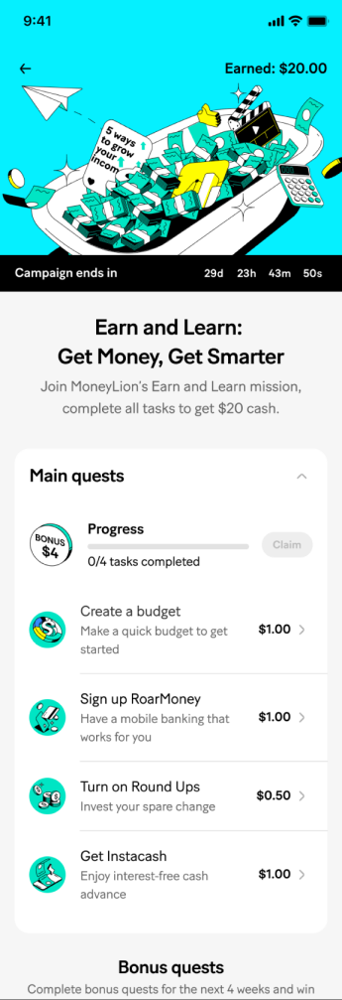

01
Mission types
- Main questsCore actions from Day 0 to Day 30 that introduce MoneyLion’s key features.
- Side questsWeekly missions over the first 4 weeks after sign-up that encourage continued exploration.
- Weekly bonusEarned by completing all missions before a set deadline, then claimed on the campaign page.
